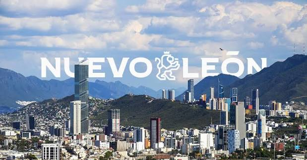

Registro Estatal de Organizaciones de la Sociedad Civil de Nuevo León

Registra tu organización y forma parte del portal de Organizaciones de la Sociedad Civil, donde podrás acceder a información, oportunidades de colaboración, recursos y herramientas de apoyo.
Si ya cuentas con registro, te recomendamos actualizar periódicamente tu información para mantener tus datos vigentes.
Leer másEl Programa de Fomento brinda apoyo económico a las Organizaciones de la Sociedad Civil comprometidas con mejorar la calidad de vida de personas en situación de pobreza y vulnerabilidad social.
A través de este programa, se impulsan iniciativas de asistencia y desarrollo social que generan un impacto positivo, sostenible y orientado al bienestar de la comunidad.
Leer másEl Consejo Consultivo de Fomento a la Sociedad Civil Organizada y el Comité Técnico para el Fomento de las Actividades de la Sociedad Civil de Nuevo León son instancias clave para impulsar el fortalecimiento, desarrollo y participación de las Organizaciones de la Sociedad Civil en el estado.
Leer másExplora una experiencia interactiva a través de nuestro contenido multimedia. Accede a recursos diseñados para informarte de manera clara, dinámica y accesible.
Mantente al día con las novedades de nuestra institución mediante contenidos visuales y atractivos que acercan la información a la ciudadanía.
Leer másSi tienes alguna duda, comentario o deseas más información sobre nuestros programas y servicios, estamos para ayudarte.
Comunícate con nosotros a través de nuestros canales de atención y con gusto atenderemos tu solicitud.
Leer más